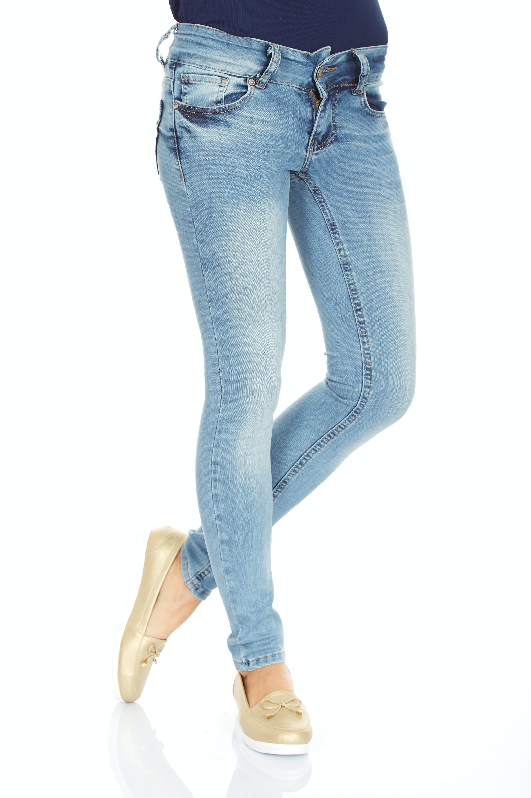

Medicated Eye-glasses

Medicated glasses are eyewear, usually recommended by professional eye doctors to resolve various eye problems. Each type is specifically designed to tackle a specific eye problem. It is good if you know the specific mediated eyewear you using and what function it performs
perfumes for men

longer shelf life than those with prominent top notes. Base notes usually include woody or balsamic flavors as well as those with a spicier scent. If your perfume contains Oriental scents such as patchouli and amber, it's likely to have a longer shelf life.
perfumes for women

Best Overall - Ajmal Amber Musc EDP 100ML Long Lasting Scent Spray Woody Perfume Gift for Men and Women - Made In Dubai. The Ajmal Amber Musc EDP is the most extraordinary perfume overall since it has a robust and potent scent that is always detected.
red t-shirt
The trick is to pair the right shade of red with other colors. Complementary colors that go well with red clothes include black, gray, brown, blue, yellow, and green
green trousers outfit
Red, orange, and purple are complementary colors for green, so incorporate those shades when styling a green outfit. 3. Neutral colors: Green also works well with neutral colors, including white, beige, tan, gray, and black